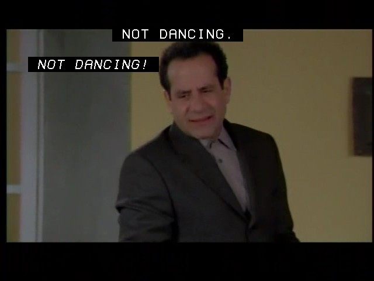
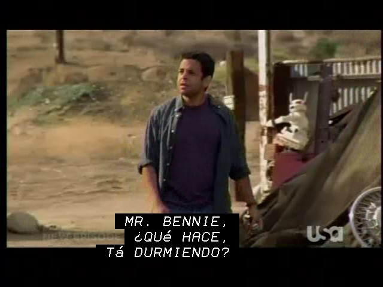
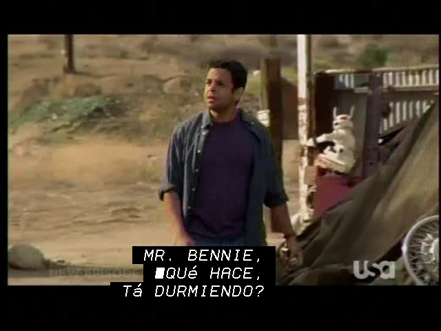

cc2subtitles
Convert Closed Captions to DVD Subtitles
cc2subtitles is a solution for the one feature I wanted that MythTV didn't
provide "out of the box."
Namely, the ability to burn recordings to DVDs with closed captions.
If you're reading this, you know that closed captions are lost when you use
the MythTV plugin, mytharchive, to burn DVDs recorded by MythTV.
Here are some details that should help you decide whether cc2subtitles might be useful to you:
-
cc2subtitles is the project name.
It contains a number of tools used to burn DVDs with closed captions.
The project started with a single program called cc2subtitles,
which can extract closed captions from recordings made with the ivtv and cx18
drivers, converting them into a format that spumux (a dvdauthor tool)
can use to add the closed captions as subtitles to recordings.
Other tools have been added to this project over time.
-
The cc2subtitles program only
works with recordings made with MPEG-2 hardware encoders,
such as Hauppauge analog cards
supported by the ivtv and cx18 drivers.
Tested with NTSC recordings made with the ivtv and cx18 drivers using the analog
inputs of a Hauppauge PVR-150 and HVR-1600 connected to a US cable TV provider.
-
The latest addition to the project is mythsubtitles, which can extract
closed captions from a wider variety of media file formats.
It is known to work with the following:
-
ATSC/QAM recordings made with hardware DVB encoders supported by the cx18 and cx88 drivers and probably other dvb drivers.
Tested with QAM recordings made with the cx18 and cx88 drivers using the digital inputs of a Hauppauge HVR-1600 and a pcHDTV HD-5500 connected to a US cable TV provider.
-
Recordings made with MPEG-2 hardware encoders supported by the ivtv and cx18 drivers.
Tested with NTSC recordings made with the ivtv and cx18 drivers using the analog inputs of a Hauppauge PVR-150 and HVR-1600 connected to a US cable TV provider.
-
MythTV's NuppelVideo recordings, file extension .nuv.
Tested with NTSC recordings made with the cx88 driver using the analog input of a pcHDTV HD-5500 connected to a US cable TV provider.
-
Individual titles ripped from DVDs, typical file extension .vob.
Tested with titles ripped from NTSC DVDs using MythTV's MythVideo plug-in and
the "Perfect" option.
mythsubtitles is able to support these media formats because it borrows
a lot of code from MythTV and
uses the MythTV versions of the ffmpeg libraries.
You must install and compile the MythTV source in order to build mythsubtitles.
-
cc2subtitles does not depend on the MythTV source.
-
Both cc2subtitles and mythsubtitles use a library called
libzvbi
(also known as ZVBI - VBI Decoding Library).
libzvbi is part of the Zapping
project, a TV viewer for the Gnome desktop.
libzvbi is available as a debian package in the debian and ubuntu repositories, and probably many other repositories, too.
-
libzvbi supports PAL/SECAM Teletext, probably better than NTSC CC,
so there's a chance my tools will be able to convert Teletext to subtitles, too.
I haven't tested it, but would be willing to,
if I can get a hold of some PAL recordings.
Or, perhaps someone else in PAL land would like to do the work?
-
Both mythsubtitles and cc2subtitles convert closed caption data
found in recordings into DVD subtitles.
They take advantage of the fact that libzvbi can produce .png (Portable Network Graphics)
renderings of CC/Teletext.
An included bash script then uses spumux (part of dvdauthor) to
convert the .png images into DVD subtitles.
I think the results are more appealing than other solutions
that use spumux to encode text based subtitles.
The results look like what you're used to seeing on your TV,
including support for italics and special characters used in Spanish & French,
as well as the musical note.
Plus, libzvbi supports closed caption colors.
Note: some special characters may require a patch for libzvbi,
if you are using a version older than libzvbi-0.2.27.
-
I'm pretty sure my tools won't work if you like to cut commercials out of your recordings.
That's because of the timestamp data I use to figure out where to add subtitles to recordings.
My personal preference is to burn DVDs of recordings with as little manual intervention as possible.
But I don't like to watch commericals, either.
Instead of taking the time to cut commercials using MythTV, I have patched
mytharchive's script, mythburn.py,
to add chapter marks at the commercial marks found by mythcommflag.
As a result, I can easily skip forward over commercials when I play my recordings on a DVD player.
If mythcommflag didn't get it quite right, I can rewind as needed.
-
This package includes a bash shell script, myburn, which puts all the pieces together to produce DVDs with closed captions converted to subtitles.
All that's required to burn a DVD is to edit a mytharchive job file,
mydata.xml, listing the recordings you want to burn,
load a blank DVD in your DVD burner, then run myburn.
Here are some example screen snapshots:

The above snapshot demonstrates:
-
that CC subtitles are positioned the same as CCs
would be on your screen, not simply fixed to the bottom of the screen.
-
that italics are supported. In this case, italics are used to indicate an off screen speaker.

The above snapshot demostrates that Spanish characters are supported.

The above snapshot was produced with an unpatched libzvbi-0.2.25.
Some Spanish characters are rendered, but the upside down question mark is
rendered as a block.
Note: this problem was fixed in libzvbi-0.2.27
You may be wondering if the captions are clipped if you view a 4:3 recording
in 16:9 mode.
They should not be clipped as long as you tell your DVD player to stretch the
image vertically, rather than just using your wide screen TV's aspect ratio
settings.
For example, I set my Panasonic wide screen TV to full screen (not zoom)
and use my Panasonic DVD player's Display menu to set "4:3 aspect" to Zoom.
With these settings, subtitles are not clipped.
If you are comfortable configuring, compiling and installing source packages,
here it is:
| Release |
Date |
Approximate Size |
Reason |
|
cc2subtitles-0.7.tar.gz
|
2010-05-27
|
583 KiB |
-
Upgraded to MythTV 0.22 and 0.23
|
|
cc2subtitles-0.6.tar.gz
|
2009-06-24
|
583 KiB |
-
Added mythsubtitles, an alternative to cc2subtitles.
Mythsubtitles supports more media file formats than cc2subtitles,
but requires that MythTV source be installed and built.
-
Added stripivtv, a utility that strips the private data stream
containing VBI data from recordings captured by the ivtv and cx18
drivers.
-
Added mytranscode, a shell script that transcodes ATSC/QAM recordings
into NTSC DVD compatible format.
-
Fixed problems compiling on 64 bit platform and regression tested
on 32 bit platform.
|
The package contains or builds a few other files:
-
src/myburn
-
A bash script that automates the process of burning DVDs with closed captions converted to subtitles.
-
doc/mydata.xml
-
An example mytharchive job file.
-
patches/mythburn*.patch
-
My patch for mythburn.py,
the mytharchive script that does most of the work of burning DVDs.
There are different versions for mythtv-0.20.2 and 0.21.
-
src/tweakdvdxml.py
-
A script that tweaks dvdauthor.xml to my taste.
-
patches/libzvbi-0.2.25.patch
-
A patch for libzvbi to render all special characters.
This patch is not required for version 0.2.27 or later.
-
patches/libzvbi-0.2.31.patch
-
A patch that fixes an occasional core dump.
-
doc
-
A copy of this documentation.
-
doc/mytheme
-
The mytharchive theme I use to burn DVDs.
-
doc/ffmpeg_dvd_ntsc.xml
-
The encoding profile I use to burn DVDs.
It containes a modification of the LP encoding profile to transcode
media files that need transcoding to a DVD compatible format.
The transcoded files will have a resolution of 720x480 and
about 4 hours worth of recordings will fit on a single sided DVD.
To use it instead of the profile provided by MythTV, you need to
install this file in $HOME/.mythtv/MythArchive/ffmpeg_dvd_ntsc.xml
-
src/decodempeg
-
A utility that decodes MPEG-PS streams, printing information found in packet headers.
-
src/stripivtv
-
A utility that that strips the private data stream
containing VBI data from recordings captured by the ivtv and cx18
drivers.
The output can be used to burn DVDs using a patched version of dvdauthor
without all the CPU intensive muxing and demuxing that's done by mythburn.py.
See
Howto: ivtv for dvdauthor for more information.
-
src/mytranscode
-
A shell script that transcodes ATSC/QAM recordings into NTSC DVD compatible
format using mencoder.
I had no end of problems trying to do this with ffmpeg, which is what
mytharchive uses on recordings that are not DVD compatible.
Fortunately, I found an example that worked here:
11.8. Using MEncoder to create VCD/SVCD/DVD-compliant files
.
When recordings are transcoded, closed caption data is lost, so mytranscode
saves the original file with a .orig file extension
so it can be used to convert closed captions to subtitles at a later time.
The myburn script checks for these .orig files and scans them for
closed captions instead of the transcoded files.
Installation instructions
- Install libzvbi (without patch)
-
Before you can build the cc2subtitles or mythsubtitles programs,
you must either install binary libzvbi development packages
or install and build the source package with
patches/libzvbi*.patch.
The necessary binary packages are available in both Debian and Ubuntu repositories,
and probably most other distributions.
On Debian and Ubuntu, use your favorite package
installation tool and install libzvbi-dev.
For example:
# apt-get libzvbi-dev
This should install the development header files as well as the runtime library.
- Install libzvbi (with patch)
-
You don't have to use libzvbi*.patch. But you may want to. See
patches/libzvbi*.patch
for information about the patches.
Note: These instructions are minimal and apply to Debian based distributions, only.
The web is full of more detailed information on how to build source packages,
not only for Debian based distributions (e.g. Ubuntu), but others, too.
-
Install and compile the source package, zvbi:
# apt-get build-dep zvbi
# apt-get --compile source zvbi
apt-get --compile will first patch and configure the source
so that, when it is compiled,
the results will be the same as the binary package.
-
Patch the source.
If you are using a version older than libzvbi-0.2.27:
# cd zvbi-0.2.25
# patch -p1 < path-to-cc2subtitles/patches/libzvbi-0.2.25.patch
# patch -p1 < path-to-cc2subtitles/patches/libzvbi-0.2.31.patch
If you are using libzvbi-0.2.27 or later:
# cd zvbi-0.2.31
# patch -p1 < path-to-cc2subtitles/patches/libzvbi-0.2.31.patch
-
Recompile and install
# make install
- Install and compile MythTV source
-
If you want to extract closed captions from the widest variety of recordings
using mythsubtitles,
you will first need to install and compile MythTV.
If you don't, you will only be able to extract closed catptions from recordings made with the ivtv driver and the analog inputs supported by the cx18 driver
using cc2subtitles.
Note: These instructions are minimal and apply to Debian based distributions, only.
The web is full of more detailed information on how to build source packages,
not only for Debian based distributions (e.g. Ubuntu), but others, too.
-
Install and compile the source package, mythtv:
# apt-get source mythtv
# apt-get build-dep mythtv
# apt-get --compile source mythtv
apt-get --compile will first patch and configure the source
so that, when it is compiled,
the results will be the same as the binary package.
You do not need to install the .deb packages produced by this command.
In fact, you can remove them.
You just need to remember where the package was compiled.
Note: If you have installed the Mythbuntu Repos package, you need to add an appropriate deb-src line to /etc/apt/sources.list.d/mythbuntu-repos.list.
Make a copy of the line similar to:
deb http://us.autobuilds.mythbuntu.org/mythbuntu/trunk-0.22/ubuntu karmic main
then change the word, deb, to deb-src on the copied line.
Here's my version before the change:
deb http://ppa.launchpad.net/mythbuntu/repos/ubuntu karmic main
deb http://us.autobuilds.mythbuntu.org/mythbuntu/trunk-0.22/ubuntu karmic main
and after the change:
deb http://ppa.launchpad.net/mythbuntu/repos/ubuntu karmic main
deb http://us.autobuilds.mythbuntu.org/mythbuntu/trunk-0.22/ubuntu karmic main
deb-src http://us.autobuilds.mythbuntu.org/mythbuntu/trunk-0.22/ubuntu karmic main
-
Create a symlink to the source:
# ln -s mythtv-source-directory /usr/src/mythtv
This step makes it easier to configure the cc2subtitles package, because
/usr/src/mythtv is where cc2subtitles expects to find the MythTV source.
You don't have to create the symlink, but if you don't, you will need to
use the --with-mythtv-src argument when you configure cc2subtitles.
-
Install cc2subtitles
-
-
Download and unpack cc2subtitles
# wget http://www.hbuus.com/cc2subtitles/cc2subtitles-0.7.tar.gz
# tar xf cc2subtitles-0.7.tar.gz
-
Configure cc2subtitles
# cd cc2subtitles-0.7
# ./configure \
--with-mytharchive-tmp=path-to-mytharchive-temp-dir \
--with-mytharchive-dir=path-to-mytharchive-install-dir \
--with-dev-dvd=dvd-device
Most options configure the bash script, myburn,
to match your environment and preferences.
One notable exception is --with-mythtv-src, needed to build mythsubtitles.
Following are descriptions of configure options unique to the cc2subtitles package:
-
--with-mytharchive-tmp=path-to-mytharchive-temp-dir
-
Set the value to your
Myth Archive Temp Directory, one of the
MythArchive Settings found in mythfrontend:
Utilities/Setup -> Setup -> Media Settings -> Archive Files Settings
Not optional, there is no default value.
However, if no value is specified, configure treats it
as a warning, not a fatal error.
This makes it easier to install and use cc2subtitles
without having MythTV installed.
-
--with-mytharchive-dir=path-to-mytharchive-install-dir
-
Set the value to the directory where the mytharchive plugin is installed.
Optional,
the default value is: /usr/share/mythtv/mytharchive
If the directory doesn't exist, configure treats it
as a warning, not a fatal error.
This makes it easier to install and use cc2subtitles
without having MythTV installed.
-
--with-dev-dvd=dvd-device
-
Set the value to the name of your DVD device.
Optional,
the default value is: /dev/dvd
-
--enable-use-fifos=[yes|no]
-
Enable or disable the use of FIFOs by the myburn script.
If your Myth Archive Temp Directory is on a file system
with less than 3 times the size of a DVD available
(e.g. 3 * 4.7 = 14.1 GB for DVD-R),
you should enable FIFOs.
Even with FIFOs enabled, the file system will need at least 2 times
the size of a DVD available
(e.g. 2 * 4.7 = 9.4 GB for DVD-R).
Optional, the default is to use FIFOs.
-
--enable-create-iso=[yes|no]
-
Enable or disable creation of an ISO image of the DVD.
Enabling this option will require an extra DVD's worth of available disk space
in your Myth Archive Temp Directory.
Optional, the default is NOT to create an ISO.
-
--with-mythtv-src=path-to-mythtv-source
-
Set the value to the directory where you have installed and compiled the mythtv source.
Optional, the default value is: /usr/src/mythtv
If the directory doesn't contain mythfrontend, it treats it as a warning and configures myburn to use cc2subtitles, not mythsubtitles.
-
Build and install
# make
# make install
If you did not install and compile MythTV source, you should instead use these commands:
# cd src
# make
# make install
-
Configure mytharchive
-
I recommend enabling the "Use FIFOs" option in MythArchive Settings.
MythArchive Settings are found in mythfrontend:
Utilities/Setup -> Setup -> Media Settings -> Archive Files Settings
"Use FIFOs" is the 6th option on Page 2.
If you don't do this, you will need an extra DVD's worth of available disk space
in your Myth Archive Temp Directory.
-
Patch mythburn.py
-
To apply the patch, execute one of the following commands.
-
If you have the mythplugins source installed:
# patch -p1 -d path-to-mythplugins-source -b < patches/mythburn-version.patch
# cd path-to-mythplugins-source
# make install
-
If you do not have the mythplugins source installed:
# patch -p3 -d path-to-mytharchive-install-dir -b < patches/mythburn-version.patch
where path-to-mytharchive-install-dir is the same value
you used when you configured the cc2subtitles package.
Note the different values for patch's -p, prefix strip, argument.
Note: it is not absolutely essential to apply this patch.
But if you don't, you will have problems if you alternate between
using myburn and mytharchive to burn DVDs.
See patches/mythburn*.patch for more information
and work arounds.
-
Burn a DVD
-
-
Create or edit the job file,
path-to-mytharchive-temp-dir/config/mydata.xml.
See
doc/mydata.xml
for more information.
If you are not comfortable editing the file, you can use
the mytharchive plugin to create the file.
Just be aware that this will mean your computer will duplicate effort
on some time consuming tasks.
If you use the plugin,
be sure you disable the "Create ISO" and "Burn DVD" options.
-
Insert blank or rewritable media into your burner.
-
Execute myburn.
Since this is such a time consuming process,
I like to run it in the background, capturing the output to examine later.
I also like to use nohup since I ususally run it in an ssh login session.
Using nohup means I can logout and login later to check the results.
So, I use this command:
$ nohup myburn &
The output will be in the file, nohup.out, in the current directory.
I can check the progress with this command:
$ grep myburn nohup.out
Here's example output from a successful burn:
2009-02-08 00:33:10 myburn[7308] begin
2009-02-08 00:33:30 myburn[7308] Executing mythburn
2009-02-08 01:15:06 myburn[7308] Executing tweakdvdxml.py
2009-02-08 01:15:07 myburn[7308] /video/tmp/work/3: Checking 1008_20090206203000.mpg for CC/Teletext
2009-02-08 01:15:07 myburn[7308] /video/tmp/work/2: Checking 1008_20090207020000.mpg for CC/Teletext
2009-02-08 01:15:07 myburn[7308] /video/tmp/work/5: Checking 1004_20090206193000.mpg for CC/Teletext
2009-02-08 01:15:07 myburn[7308] /video/tmp/work/4: Checking 1004_20090205193000.mpg for CC/Teletext
2009-02-08 01:15:07 myburn[7308] /video/tmp/work/1: Checking 1008_20090130220000.mpg for CC/Teletext
2009-02-08 01:15:07 myburn[7308] /video/tmp/work/6: Checking 1067_20090207210000.mpg for CC/Teletext
2009-02-08 01:16:59 myburn[7308] /video/tmp/work/4: Adding subtitles
2009-02-08 01:17:13 myburn[7308] /video/tmp/work/5: Adding subtitles
2009-02-08 01:19:31 myburn[7308] /video/tmp/work/6: Adding subtitles
2009-02-08 01:26:33 myburn[7308] /video/tmp/work/3: Adding subtitles
2009-02-08 01:32:36 myburn[7308] /video/tmp/work/1: Adding subtitles
2009-02-08 01:33:29 myburn[7308] /video/tmp/work/2: Adding subtitles
2009-02-08 01:33:29 myburn[7308] Executing dvdauthor -x /video/tmp/work/dvdauthor.xml
2009-02-08 02:01:59 myburn[7308] /video/tmp/work/1: Finished CC/Teletext processing
2009-02-08 02:26:14 myburn[7308] /video/tmp/work/2: Finished CC/Teletext processing
2009-02-08 02:37:03 myburn[7308] /video/tmp/work/3: Finished CC/Teletext processing
2009-02-08 02:38:48 myburn[7308] /video/tmp/work/4: Finished CC/Teletext processing
2009-02-08 02:40:42 myburn[7308] /video/tmp/work/5: Finished CC/Teletext processing
2009-02-08 02:45:10 myburn[7308] /video/tmp/work/6: Finished CC/Teletext processing
2009-02-08 02:46:38 myburn[7308] Executing growisofs -dvd-video -V 'MyBurn' -use-the-force-luke -Z /dev/dvd1 /video/tmp/work/dvd
2009-02-08 03:01:16 myburn[7308] Success!
As you can see, it took a long time, about 2.5 hours to burn a 4.4 GB DVD.
FWIW, I was watching recordings the whole time.
Plus, a recording was in progress, along with commerical flagging,
for the first 1/2 hour.
All this on a system with a 32 bit AMD Sempron 3100+ and 1 GB RAM.
FWIW, I now have a new system that can burn a 4 GB DVD in about 34 minutes.
The new system has a 64 bit AMD X2 4850e CPU and 4 GB RAM.
More Details
This executable program reads a TV recording and renders NTSC closed captions (and possibly PAL/SECAM Teletext) as .png (Portable Network Graphics) image files.
If the recording contains VBI data encoded by the IVTV driver,
cc2subtitles will feed the data to the libzvbi library to render closed captions
as .png images.
For each image file, cc2subtitles adds a record to an XML file that
specifies a start and end time when the image should be displayed
during playback.
The default file name is spumux.xml.
spumux.xml can be read by spumux (part of dvdauthor), which converts
the images into DVD subtitles and embeds them in an MPEG2 file.
cc2subtitles also adds XML comment tags containing the closed caption text
in spumux.xml.
If no closed captions are found in the TV recording,
cc2subtitles will remove spumux.xml and exit with a non-zero code.
This executable program adds support for a wider range of media formats as described at the top of this page.
It is a backward compatible replacement for the cc2subtitles program.
However, it also adds a dependency on the MythTV source.
This bash script is a wrapper around mythsubtitles/cc2subtitles and
mythburn.py (part of the mytharchive plug-in), which does most of the work.
I prefer to use myburn from the command line rather than
mythfrontend/mytharchive,
because I find it easier to edit the job file from a ssh login than use the
mythfrontend GUI and
I can still watch recordings with mythfrontend while
this script is busy prepping files to burn to DVD.
myburn assumes you have set up a mytharchive job file,
path-to-mytharchive-temp-dir/config/mydata.xml,
described below.
myburn automates the process of:
-
transcoding, demuxing, and remuxing recordings and videos into a DVD compatible format.
-
creating DVD menus and an XML file
(dvdauthor.xml)
that tells dvdauthor how to assemble the desired DVD file system.
-
tweaking dvdauthor.xml to match my personal tastes, using tweakdvdxml.py
-
for each recording:
-
executing mythsubtitles or cc2subtitles to render closed captions as images and create spumux.xml.
-
executing spumux to convert the images into subtitles and embedding them into a new mpeg file.
-
executing dvdauthor to create the DVD file system.
-
optionally executing mkisofs to convert the DVD file system into an ISO image.
-
executing growisofs to burn the DVD file system or ISO image onto DVD.
The mytharchive script, mythburn.py, normally does all but steps 3 and 4.
An example mytharchive job file.
When you use mytharchive to burn DVDs, it creates the job file,
path-to-mytharchive-temp-dir/config/mydata.xml.
The job file is the way mytharchive tells it's helper script, mythburn.py, what recordings and videos you want to burn to DVD.
The file also contains the choices you make on whether to create an ISO image
or to burn a DVD. Here's a copy of the example:
<!DOCTYPE mythburn>
<mythburn>
<job theme="Compact" >
<media>
<!-- The following line is for a recording made by mythtv-0.20.2 (Note the short file name) -->
<file usecutlist="0" type="recording" encodingprofile="NONE" filename="1007_20080217185500.mpg" />
<!-- The following line is for a recording made by mythtv-0.21 (Note the full path name) -->
<file usecutlist="0" type="recording" encodingprofile="NONE" filename="/video/mythtv/recordings/1007_20080217185500.mpg" />
<!-- The following line is for a DVD VOB imported by mythdvd (Note the full path name) -->
<file usecutlist="0" type="video" encodingprofile="NONE" filename="/video/mythtv/video/07-06-23-Swim.vob" />
</media>
<!-- The following line defines option values, I added rundvdauthor="0" -->
<options rundvdauthor="0" dvdrsize="4482" mediatype="0" erasedvdrw="0" createiso="0" doburn="0" savefilename="" />
</job>
</mythburn>
-
<job> element
-
This element's theme attribute specifies the look and feel you want for your DVD.
The available themes can be found here:
path-to-mytharchive-install-dir/themes
where path-to-mytharchive-install-dir is the
directory where the mytharchive plugin is installed.
-
<file> elements
-
For each recording you select,
there will be a <file> element
with type="recording" indicating that the file is a recording.
In mythtv-0.20.2, the filename attribute is relative to the recording directory.
In mythtv-0.21, the filename attribute is the file's full path name.
In my case, the file, 1007_20080217185500.mpg can be found in
/video/mythtv/recordings where /video/mythtv is
my storage directory and recordings is the subdirectory that
contains recordings made by MythTV.
I can usually figure out what recording I want by listing the contents of
the directory.
The file names are formatted as follows:
TCCC_YYYYMMDDhhmmss.mpg.
In this case:
T is 1 for tuner 1.
CCC is 007 for channel 7.
YYYY is 2008, the year.
MM is 02, the month.
DD is 17, the day of the month.
hh is 18, the hour based on 24 hour clock.
mm is 55, the minutes.
ss is 00, the seconds.
In other words, the recording was made on tuner 1, channel 7,
on February 17, 2008 starting at 18:55:00 (6:55 PM).
For each video you select,
there will be a <file> element
with type="video" indicating that the file is an imported video.
The filename attribute is the full path name of the imported video file.
You can see from this example that my storage directory is
/video/mythtv and imported videos are stored in the
video subdirectory.
The other attributes apply to both recordings and videos:
-
usecutlist
-
must be set to 0, because cc2subtitles doesn't know about cut lists.
If you set usecutlist to 1, CC subtitles will not be in sync with your
video and audio.
-
encodingprofile
-
can be HQ (high quality, 1 hour/DVD), SP (standard play, 2 hours/DVD),
LP (long play, 4 hours/DVD) or EP (extended play, 6 hours/DVD),
or it can be NONE, if you don't want your recordings or videos re-encoded.
-
<option> element
-
There should be only one <option> element.
-
rundvdauthor -
I added support for this option to mythburn.py.
If you use
patches/mythburn*.patch,
setting this attribute to 0 will tell mythburn.py NOT to run dvdauthor.
This will save time because the myburn script will run dvdauthor after it adds
CC subtitles to the final DVD titles.
-
dvdrsize -
This attribute specifies the capacity of the DVD media.
For single layer DVDs (including RW media), the value should be 4482.
For dual layer DVDs, the value should be 8964.
-
mediatype -
This attribute specifies the media type.
-
single layer DVD
-
dual layer DVD
-
DVD +/- RW
-
file
-
erasedvdrw -
This attribute applies to DVD +/- RW media.
If you want growisofs to first erase the DVD, set this attribute to 1.
Otherwise, set it to 0.
The myburn script checks this attribute.
If it is non-zero, it calls growisofs with the option, -use-the-force-luke,
which improves the chances that growisofs will successfully burn
a rewritable DVD.
-
createiso -
Must be set to 0 so mythburn.py doesn't waste time and disk space
creating the ISO that myburn will create later.
-
doburn -
Must be set to 0 so mythburn.py does not try to burn the DVD that
myburn will burn later.
-
savefilename -
As long as createiso is 0, this attribute has no effect.
Leave it as the null string.
My patch for mythburn.py,
the mytharchive script that does most of the work of burning DVDs.
It patches the mythburn.py script that comes with mytharchive.
There are two patches:
-
patches/mythburn-0.20.2.patch is for mythtv-0.20.2.
-
patches/mythburn-0.21.patch is for mythtv-0.21.
I do not know if my latest patch will apply cleanly to an SVN version.
If you try it with SVN, please let me know whether the patch applies cleanly and
whether the script still works after patching.
I changed the script as follows:
-
It adds support for an option to NOT run dvdauthor.
The option is specified in the mytharchive job file by adding the attribute:
rundvdauthor="0"
to the options element.
See
doc/mydata.xml
for an example.
Since dvdauthor has to be run after cc2subtitles and spumux,
telling mythburn.py to not run dvdauthor reduces the time it takes
to prepare and burn a DVD.
-
It creates chapter marks at transitions to/from commercials.
The original creates chapters at fixed 5 minute intervals.
-
It fixes a problem that prevents mytharchive from creating DVDs after
myburn has been used.
mythburn.py would terminate when it couldn't clean up working directories
left over from an earlier run of myburn.
That's because myburn creates subdirectories for cc2subtitles to store the
CC image files.
The fix was to change mythburn.py's deleteAllFilesInFolder function
to remove subdirectories as well as files.
-
Personally, I find the intro menu an annoying waste of time.
But when I tried my own theme with no intro,
my Panasonic DVD player would not play the menus at all.
So I found the cause and fixed it.
-
I changed how recording times are formatted on menus that display recording times.
Originally, mythburn.py used the start time of a program,
not the time when the recording started,
and it didn't display when the recording ended.
So you couldn't tell, looking at the menu, how long any title runs.
I changed it to display when a recording started and ended.
If you do not patch mythburn.py, and want to switch between using mytharchive
and myburn, you may need to work around problem 3.
A script that tweaks dvdauthor.xml to my taste.
tweakdvdxml.py does some postprocessing on the dvdauthor.xml script
created by mythburn.py:
-
It puts all the titles into one titleset.
-
It makes sure languages are specified for the audio and subtitle tracks.
If no language is specified by mythburn.py (and it isn't in 0.20.2),
tweakdvdxml.py will use the value of the LANG environment variable.
If LANG is unset, it sets the audio and subtitle languages to English.
There is also a command line option to override the default.
-
It tells a dvd player to play titles one after another,
instead of going back to the main menu after playing each title.
-
It moves the main menu from the root menu to the titleset menu.
That's because it's most convenient with my universal remote.
I have only tested tweakdvdxml.py with dvdauthor.xml files created with
my own theme.
So the myburn script only executes it when the theme specified in mydata.xml is "mytheme".
So far, I have found one problem with tweakdvdxml.py.
If you burn a DVD with a mix of TV recordings from different video sources and/or imported videos,
it may seem as though there is no sound when you play back some titles.
It depends on whether all media files use the same audio format.
For example, those recorded by MPEG-2 hardware encoders will have MP2 audio,
while titles ripped from DVDs will have AC3 audio.
If they're different, you'll have to tell your DVD player to change
the audio track when playing titles that have a different audio format
than the first title.
If all media files have the same audio format, all should be well.
None of this will matter to you if you don't use "mytheme."
If you want to try "mytheme" and tweakdvdxml.py, you will have to copy this package's doc/mytheme directory to
path-to-mytharchive-install-dir/themes/mytheme.
If you decide to use "mytheme," here are some suggestions:
-
Don't burn DVDs with a mix of TV recordings from different video sources and/or imported videos.
-
If you want to create a DVD with a mix of recordings and videos,
rerun dvdauthor with the untweaked dvdauthor_orig.xml, e.g.:
dvdauthor -x path-to-mytharchive-temp-dir/work/dvdauthor_orig.xml
-
Use a theme other than "mytheme" when burning a mix of recordings and videos.
This patch addresses two issues with versions of libzvbi, prior to 0.2.27.
-
It fixes a bug that causes some (but not all) special characters to be rendered as blocks.
In particular, the musical note and upside down question mark will be
rendered as blocks if you don't use this patch.
The bug is fixed in the CVS version.
When there is a new release available, my patch should not be needed.
-
It disables an annoying message that libzvbi writes to stderr.
Not a big deal, just annoying and time consuming.
patches/libzvbi-0.2.31.patch
This patch fixes an occasional core dump caused by a bug in libzvbi.
The bug has been there since I started this project.
It was difficult to debug since valgrind and gdb watchpoints were no help.
I finally got serious about tracking it down when I upgraded to mythtv-0.21
and needed to make more changes to cc2subtitles.
For what it's worth, my patch has been accepted by the zvbi project,
so it shouldn't be needed with versions after 0.2.33.
Closing Remarks
All feedback, questions and comments, are welcome.
For example:
-
Comments on the documentation.
Is the level of detail too much, too little, or about right?
How about the way it's organized?
-
Comments on the package.
Can you use the package in its current form?
If not, why not?
Are you using a newer version of MythTV?
It doesn't have a pretty GUI and requires
some knowledge of MythTV to configure and use effectively.
Is that a show stopper?
-
Of course, if you like it, I welcome positive feedback.
You can reach me at mythtv at hbuus.com (replace the "at" with @).
The latest version of this document can be found at:
http://www.hbuus.com/cc2subtitles/